Cardiovascular disease is the leading cause of death worldwide, and a model that estimates a patient's probability of coronary artery disease from routine clinical measurements could help decide who needs invasive angiography. I predict angiographically confirmed heart disease from 13 clinical attributes using all four hospitals of the UCI Heart Disease data (920 patients from Cleveland, Hungary, Switzerland and Long Beach VA) instead of the usual 303-patient Cleveland subset. Pooling the hospitals makes the problem harder: 16% of values are missing in strongly hospital-specific patterns, and disease prevalence ranges from 36% to 94% between sites. I build a leakage-free preprocessing pipeline (median/mode imputation with missing-value indicators, one-hot encoding and standardisation) and compare three tuned classifiers: L2-regularised logistic regression, an RBF-kernel support vector machine and a random forest. On a held-out test set of 184 patients all three reach a ROC-AUC of 0.90–0.91 and an accuracy of 0.84–0.85 (majority baseline: 0.55). The differences between them are not statistically significant. Supporting experiments show that performance is limited by the information in the features rather than by model capacity, that missingness acts largely as a fingerprint of the hospital, and that a random train/test split overstates performance at an unseen hospital (per-hospital AUC falls by 0.06–0.09 on the three hospitals with enough healthy patients to measure it).
Given 13 clinical attributes that may be collected when a patient is evaluated for chest pain (age and sex, chest-pain type, resting blood pressure and cholesterol, fasting blood sugar, resting ECG, exercise-test results, and fluoroscopy and thallium-scan findings), the task is to predict whether coronary angiography would show a diameter narrowing of more than 50% in at least one major vessel. This is a binary classification problem: label 1 means heart disease is present and label 0 means it is absent. I use the four patient cohorts of the UCI Heart Disease repository [1, 2] together, so the model has to work for patients from different hospitals and countries, not only for the Cleveland Clinic patients that most previous work has studied.
Why it matters. Cardiovascular diseases caused an estimated 19.8 million deaths in 2022, about 32% of all deaths worldwide [3]. Coronary angiography is the reference test for coronary artery disease, but it is invasive, expensive and carries a small risk of complications. A model that turns cheap, non-invasive measurements into a well-calibrated probability of disease could help triage patients: refer high-probability patients to angiography quickly, and spare low-probability patients an unnecessary procedure. Because a missed diagnosis is much worse than an extra test, such a model has to be judged on more than accuracy: sensitivity, calibration and behaviour on new hospitals matter as much.
Challenges. Pooling the four hospitals creates the main difficulties of this project:
ca) is missing for 96–99% of non-Cleveland patients, and cholesterol is never recorded in Switzerland (it is stored as a fake value of 0 there). Deleting incomplete rows would discard 68% of the data and almost every non-Cleveland patient.I first explore the data visually and statistically, paying particular attention to where values are missing. I then build a preprocessing pipeline that imputes missing values, adds missing-value indicators, one-hot encodes nominal features and standardises numeric ones. Every step is fitted inside a scikit-learn Pipeline, so no information leaks from validation or test data. I compare three algorithms that represent different inductive biases: logistic regression (linear and interpretable, the classical clinical model), an RBF-kernel SVM (non-linear, maximum-margin) and a random forest (an ensemble of trees that captures interactions). Each is tuned by grid search with stratified 5-fold cross-validation (CV) on 80% of the data. Each is then evaluated on a held-out 20% test set, with bootstrap confidence intervals and paired significance tests.
This design makes sense for the challenges above. ROC-AUC is threshold-free and insensitive to prevalence, so it is a sound tuning criterion when sites differ in base rate. Stratifying the split on hospital × diagnosis keeps both distributions nearly identical in training and test. The missing-indicator strategy keeps every patient, and the three model families tell us whether non-linearity actually helps. Finally, I run targeted experiments to explain the results rather than just report them: a preprocessing ablation, learning and validation curves, leave-one-hospital-out validation, a test of whether missingness encodes the hospital, feature importance, decision-threshold selection, calibration and error analysis.
Detrano et al. [2] collected these data to test whether a probability model for coronary disease transfers between institutions. Their logistic-regression-derived discriminant function, developed on Cleveland patients, achieved about 77% accuracy on Hungary, 79% on Long Beach and 81% on Switzerland (0.5 threshold) [1, 2]. Early machine-learning studies used only the Cleveland subset: Aha and Kibler's instance-based learner (NTgrowth) reached 77.0% and the C4 decision tree 74.8% accuracy, as recorded in the dataset documentation [1], and the CLASSIT conceptual clustering system 78.9% [19]. The Cleveland subset has since become a standard teaching benchmark. My project differs in two ways: it uses all four cohorts with an explicit strategy for their missing values, and it measures cross-hospital generalisation directly with leave-one-site-out validation.
The data come from the UCI Machine Learning Repository [1]. The original databases contain 76 attributes, but the “processed” files used in all published experiments keep 14: 13 predictors and the diagnosis num. I downloaded the four processed files (Cleveland Clinic Foundation; Hungarian Institute of Cardiology, Budapest; University Hospitals Zurich and Basel, Switzerland; V.A. Medical Center, Long Beach, CA) and stacked them, adding a site column. This gives 920 patients, all evaluated for suspected coronary disease and referred for angiography at these centres in the 1980s, so the label comes from a reference-standard test but the cohort is a referral population. The diagnosis num ranges from 0 (<50% narrowing) to 4; following the dataset documentation and prior work, I binarise it as disease = num > 0. The original codes are distributed 411 / 265 / 109 / 107 / 28 for 0–4, and the Hungarian file only uses 0 and 1. The binary target is reasonably balanced overall: 509 patients with disease (55.3%) and 411 without. Table 1 describes the features and Table 2 the four cohorts.
| Feature | Description | Type | Values / range | Missing |
|---|---|---|---|---|
age | Age in years | continuous | 28–77 | 0% |
sex | Sex | binary | 0 female, 1 male | 0% |
cp | Chest-pain type | nominal | typical / atypical angina, non-anginal, asymptomatic | 0% |
trestbps | Resting blood pressure (mm Hg) | continuous | 80–200 | 6.5% |
chol | Serum cholesterol (mg/dl) | continuous | 85–603 | 22.0% |
fbs | Fasting blood sugar > 120 mg/dl | binary | 0 no, 1 yes | 9.8% |
restecg | Resting ECG | nominal | normal, ST-T abnormality, LV hypertrophy | 0.2% |
thalach | Maximum heart rate in exercise test (bpm) | continuous | 60–202 | 6.0% |
exang | Exercise-induced angina | binary | 0 no, 1 yes | 6.0% |
oldpeak | Exercise-induced ST depression (mm) | continuous | −2.6 to 6.2 | 6.7% |
slope | Slope of the peak-exercise ST segment | nominal (ordered) | upsloping, flat, downsloping | 33.6% |
ca | Major vessels coloured by fluoroscopy | ordinal count | 0–3 | 66.4% |
thal | Thallium stress-scan result | nominal | normal, fixed defect, reversible defect | 52.8% |
| target | Angiographic disease (num > 0) | binary | 0 absent, 1 present | 0% |
| Hospital | Patients | Disease | Prevalence | Median age | Male | Complete |
|---|---|---|---|---|---|---|
| Cleveland | 303 | 139 | 45.9% | 56 | 68.0% | 98.0% |
| Hungary | 294 | 106 | 36.1% | 49 | 72.4% | 0.3% |
| Switzerland | 123 | 115 | 93.5% | 56 | 91.9% | 0.0% |
| Long Beach VA | 200 | 149 | 74.5% | 60 | 97.0% | 0.5% |
| All | 920 | 509 | 55.3% | — | — | 32.5% |
Missing values are coded as ? in the files and are read as missing. Two kinds of placeholder are less obvious. Cholesterol is 0 for 172 patients (all 123 Swiss patients and 49 at Long Beach), and resting blood pressure is 0 for one patient. Neither value is physiologically possible, so I recode both as missing. This matters. The cholesterol zeros belong to high-prevalence hospitals (88.4% of these patients have disease), so leaving them in would make low cholesterol look like a risk factor. The rank-biserial correlation between cholesterol and disease is −0.158 with the zeros but +0.146 without them, so the sign of the effect flips. I also found two pairs of exact duplicate rows (one in Hungary, one at Long Beach). I kept them because they may be different patients with identical values. One of the two pairs falls across the train/test split, so at most one of the 184 test patients has an identical training record, which is too few to affect the conclusions materially.
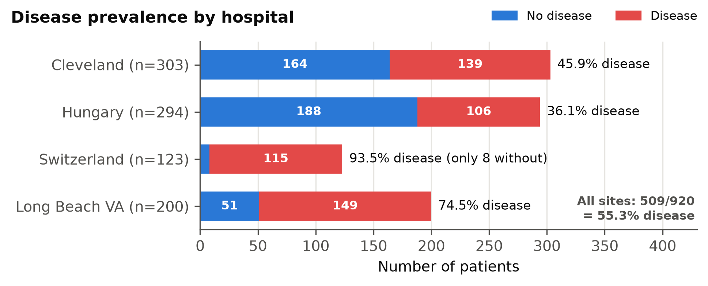
Class balance. Figure 1 shows that the pooled classes are balanced enough that re-sampling is not needed. The hospitals, however, differ greatly in prevalence (χ² = 157.4, p = 6.7×10−34, Cramér's V = 0.41). This has two consequences. First, “which hospital?” is itself predictive of the label. Second, any feature that reveals the hospital, such as a measurement that only one site records, can act as a proxy for prevalence.
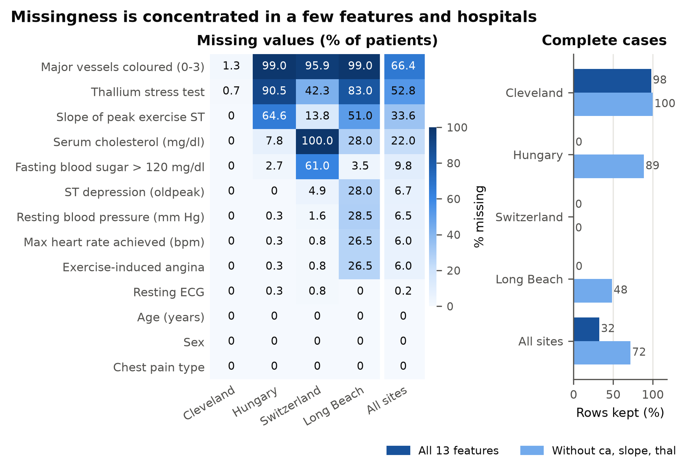
ca, slope and thal (light). Missingness is concentrated in a few features and is almost entirely determined by the hospital.Missingness. Figure 2 is the key figure of the data analysis. Cleveland is essentially complete. The other three hospitals almost never recorded fluoroscopy (ca, 96–99% missing), and thallium (thal) is missing for 83–91% of patients in Hungary and Long Beach and 42% in Switzerland. Switzerland never recorded cholesterol, and 26.5% of Long Beach patients (53 of 200) have no exercise-test values at all. Complete-case deletion would keep 98% of Cleveland but almost no one else (32.5% of the data overall), so it would turn a four-hospital study back into a Cleveland study. Even dropping the three sparsest features would still lose every Swiss patient.
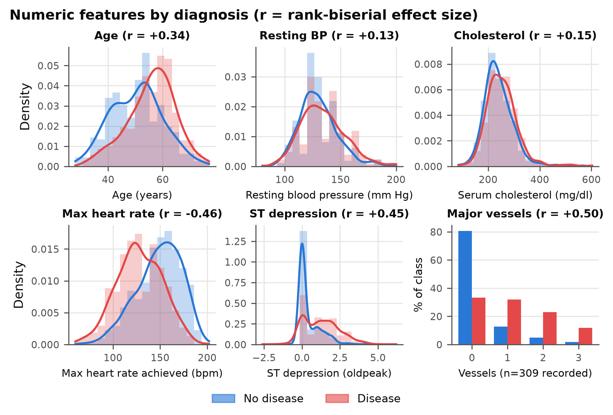
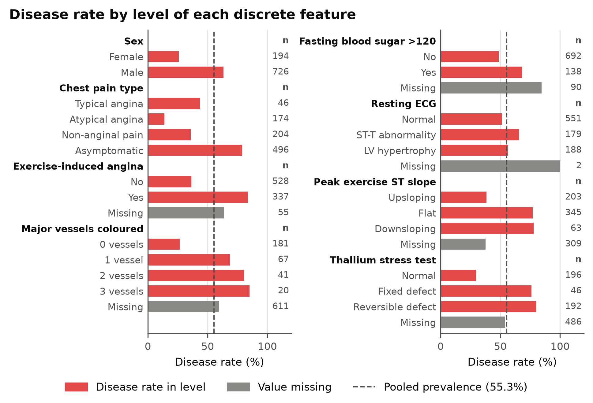
Univariate relationships. Figures 3 and 4 show clear and clinically sensible patterns. Asymptomatic chest pain carries a 79.0% disease rate, against 13.8% for atypical angina. This sounds paradoxical, but it is well known in this data set: “asymptomatic” patients were referred for angiography for other reasons such as an abnormal ECG. Exercise-induced angina (83.7% disease when present), a flat or downsloping ST segment, a reversible thallium defect and more coloured vessels (26.5% disease for 0 vessels up to 85.0% for 3) all indicate disease. So do male sex (63.2% vs 25.8% for women), older age (median 57 vs 51 years) and a lower peak heart rate (median 128 vs 151 bpm). The grey “missing” bars in Figure 4 do not sit at the pooled prevalence. Missing slope, for instance, has only a 37.5% disease rate, which is a first hint that missingness itself carries information.
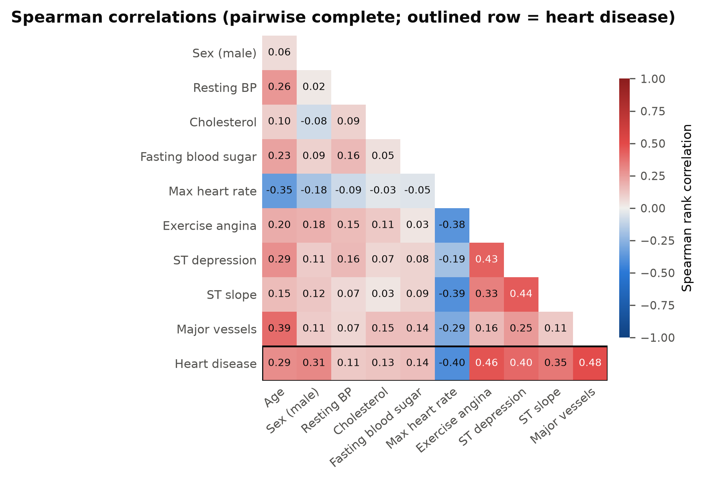
Correlations. The correlation matrix (Figure 5) shows no severe multicollinearity. The largest correlation between predictors is 0.44 (ST depression vs ST slope), and the exercise-test variables form a related group: heart rate, angina, ST depression and slope. No single feature correlates with disease by more than |ρ| = 0.48 (ca 0.48, exang 0.46, oldpeak 0.40, thalach −0.40). This suggests that a good classifier must combine several moderately informative features.
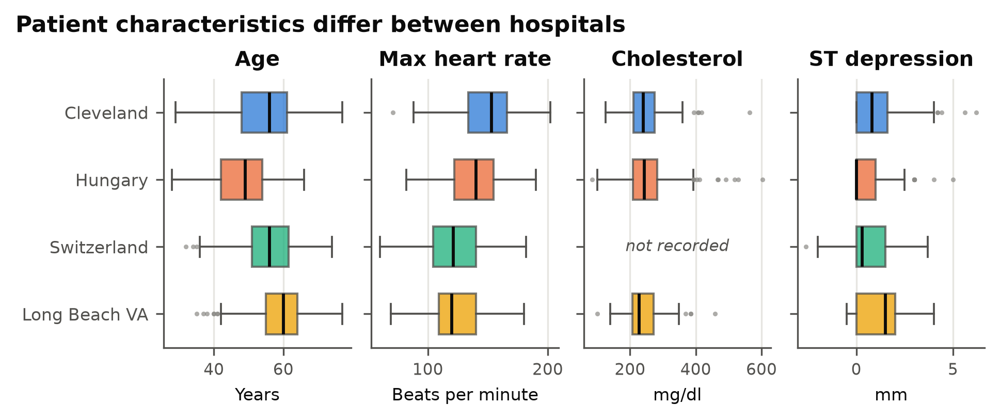
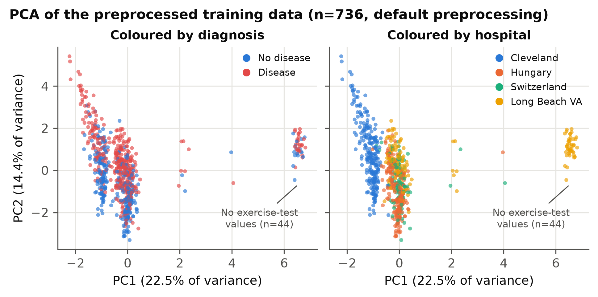
Hospital differences and structure. Figure 6 shows that the cohorts are genuinely different populations. Hungarian patients are younger (median 49 years vs 60 at Long Beach), and Swiss and Long Beach patients reach much lower peak heart rates (medians 121 and 120 bpm vs 153 in Cleveland). Kruskal–Wallis tests confirm differences in age (H = 202.1, p = 1.5×10−43), heart rate (H = 161.7) and ST depression (H = 67.1), but not in blood pressure or cholesterol. The PCA projection (Figure 7) shows two things. First, the classes overlap substantially in the leading two components, so no simple boundary exists. Second, the largest source of variance (PC1) is the missingness pattern, not a clinical quantity: it is driven by the missing indicators of resting blood pressure, peak heart rate and ST depression (loadings ≈ 0.52) and isolates 44 Long Beach patients who had no exercise test.
Univariate tests. I tested each feature's association with disease, using a Mann–Whitney U test for numeric features and a χ² test for discrete ones, with a Holm correction for 13 tests [22]. All 13 features are significantly associated with disease, but the effect sizes differ greatly (Table 3). Chest-pain type, the thallium result, the number of vessels, exercise angina, peak heart rate and ST depression have moderate-to-large effects. Cholesterol, fasting blood sugar, blood pressure and resting ECG have weak ones.
| Feature | Effect | Holm p | Feature | Effect | Holm p |
|---|---|---|---|---|---|
| Chest-pain type | V = 0.54 | 9.2×10−57 | ST slope | V = 0.38 | 3.6×10−19 |
| Thallium result (n = 434) | V = 0.50 | 1.9×10−23 | Age | r = +0.34 | 7.7×10−18 |
| Vessels coloured (n = 309) | r = +0.50 | 9.4×10−17 | Sex | V = 0.31 | 9.3×10−20 |
| Exercise angina | V = 0.46 | 3.0×10−41 | Cholesterol | r = +0.15 | 2.1×10−3 |
| Max heart rate | r = −0.46 | 9.4×10−31 | Fasting blood sugar | V = 0.14 | 1.6×10−4 |
| ST depression | r = +0.45 | 9.4×10−31 | Resting BP / resting ECG | r = +0.13 / V = 0.11 | 2.6 / 2.9×10−3 |
Is missingness informative? Missing data can be missing completely at random, at random given other variables, or not at random [17]. Here, a naive χ² test says that missingness of four of the ten incomplete features (cholesterol, ca, fasting blood sugar and slope) is strongly associated with disease (e.g. cholesterol, p = 2.2×10−16). However, this mostly re-detects the hospital: sites with more gaps also have higher prevalence. A Cochran–Mantel–Haenszel test stratified by hospital asks whether missingness predicts disease within a hospital. For cholesterol (p = 0.57), ca (p = 0.79) and fasting blood sugar (p = 0.32) it does not. These gaps are pure hospital signatures. The exception is slope: within hospitals, patients with a missing ST slope are much less likely to have disease (37.5% vs 51.9% expected from their hospitals; p = 3.1×10−18), presumably because the slope is only recorded when the ST segment is abnormal. This analysis guides the preprocessing design and the interpretation in Section 4.
The preprocessing steps and the reason for each are:
? and impossible zeros become missing, and the target is binarised.ca): median imputation plus a binary missing indicator for each feature that has gaps, followed by standardisation to zero mean and unit variance. The median is robust to the skewed cholesterol and ST-depression distributions. The indicators let the model learn that “not measured” may mean something (as for slope) instead of pretending that the imputed median was observed. Standardisation is required by the SVM's distance-based kernel and makes the logistic-regression penalty treat all coefficients equally. ca is an ordered count, so I keep it numeric.thal = 7 is not “more” than 6.The result is 30 model inputs: 6 scaled numeric features, 5 missing indicators, 3 binary features and 16 one-hot columns. All steps live in a scikit-learn ColumnTransformer inside each model's Pipeline, so imputation medians and scaling statistics are recomputed on the training part of every CV fold and never see validation or test patients. I deliberately did not remove outliers or re-balance classes. The extreme values are clinically plausible (a negative ST depression is an ST elevation; cholesterol of 603 mg/dl occurs), and both regularisation and tree ensembles are robust to them. The 55/45 class split is mild. I also did not use the hospital as a feature, because a model meant for a new hospital cannot rely on it (this choice is tested in Section 4.6.4). Two simpler alternatives are compared against this design in Section 4.6.2: plain imputation without indicators, and dropping the three sparsest features.
After preprocessing, each patient is a vector \(\mathbf{x}\in\mathbb{R}^{d}\) (\(d=30\)) with label \(y\in\{0,1\}\). Every model learns a score \(\hat p(\mathbf{x})\approx P(y=1\mid\mathbf{x})\), and a patient is predicted positive when \(\hat p(\mathbf{x})\ge t\), with \(t=0.5\) unless stated otherwise. I chose three algorithms from the course that sit at different points of the bias–variance spectrum: a linear parametric model, a kernel-based maximum-margin model and an ensemble of decision trees. All are implemented with scikit-learn [4] and share the preprocessing of Section 2.5.
Model. Logistic regression models the log-odds of disease as a linear function of the features and maps it to a probability with the sigmoid function:
Training. The weights minimise the regularised negative log-likelihood (cross-entropy). With labels recoded as \(\tilde y_i\in\{-1,+1\}\), the objective solved by the liblinear solver is
(liblinear also applies the penalty to the intercept, a minor detail omitted from the formula.) The loss is convex, so the solver finds the global optimum. \(C\) is the inverse regularisation strength. A small \(C\) shrinks the weights towards zero (higher bias, lower variance), while a large \(C\) fits the training data more closely. The L1 penalty can set weights exactly to zero and so performs feature selection [16]. L2 shrinks all weights smoothly and copes better with correlated inputs, such as the one-hot levels of one categorical feature.
Hyperparameters searched. \(C\in\{0.001,0.01,0.1,1,10,100\}\) × penalty \(\in\{\text{L1},\text{L2}\}\) (12 candidates).
Why it makes sense here. LR is the standard model for clinical risk scores; the original study of this data used a logistic-regression-derived function [2]. That makes LR the natural reference point. \(e^{w_j}\) is an odds ratio, which a clinician can understand directly: per one standard deviation for the standardised numeric features and missing indicators, and for presence versus absence for binary and one-hot features. Its limitation is the linear decision boundary: it cannot represent interactions such as chest-pain type × exercise angina unless they are engineered by hand.
Model. A soft-margin SVM [6] looks for the separating hyperplane with the largest margin in a feature space \(\phi(\mathbf{x})\). Slack variables \(\xi_i\) allow some points to violate the margin:
Solving the dual problem gives a decision function that depends on the training data only through a kernel \(K\) and the non-zero dual coefficients \(0\le\alpha_i\le C\) of the support vectors. I use the Gaussian (RBF) kernel, which corresponds to an infinite-dimensional feature space:
\(C\) trades margin width against training errors. \(\gamma\) sets the kernel width. A large \(\gamma\) lets each support vector influence only its close neighbours, which produces a wiggly boundary that can over-fit. A small \(\gamma\) gives an almost linear boundary.
Probabilities. \(f(\mathbf{x})\) is a signed distance, not a probability. To obtain \(\hat p(\mathbf{x})\), which threshold selection and calibration analysis need, I apply Platt scaling [7]. A sigmoid \(\hat p(\mathbf{x})=1/(1+\exp(A f(\mathbf{x})+B))\) is fitted to out-of-fold decision values from an internal 5-fold split of the training data, using scikit-learn's CalibratedClassifierCV with the sigmoid method.
Hyperparameters searched. \(C\in\{0.1,0.5,1,5,10,50\}\) × \(\gamma\in\{\text{scale},0.001,0.01,0.05,0.1\}\) (30 candidates; “scale” = \(1/(d\cdot\mathrm{Var}(\mathbf{X}))\)).
Why it makes sense here. The data set is small (736 training patients), but the boundary between healthy and diseased patients need not be linear. Maximum-margin training controls over-fitting well in exactly this small-\(n\) regime, and the RBF kernel adds non-linearity without hand-crafted features. Because the kernel is based on Euclidean distances, the SVM is sensitive to feature scale, which is why standardisation is part of the pipeline (Section 4.6.2 shows how much this matters).
Model. A random forest [5] is an ensemble of \(B\) decision trees. Each tree is grown on a bootstrap sample of the training set, and at every node only a random subset of \(m\) features is considered for the split. A split of node \(S\) into \(S_L\) and \(S_R\) is chosen to maximise the decrease in Gini impurity:
where \(p_k(S)\) is the fraction of class \(k\) in the node. The forest prediction averages the class-probability estimates of its trees: \(\hat p(\mathbf{x})=\frac1B\sum_{b=1}^{B}\hat p_b(\mathbf{x})\).
Why averaging works. A single deep tree has low bias but very high variance. If each tree has variance \(\sigma^2\) and the pairwise correlation between trees is \(\rho\), the variance of their average is [8]
Bagging removes the second term as \(B\) grows, and random feature sub-sampling lowers \(\rho\) and therefore the first term.
Hyperparameters searched. \(B=500\) trees; max_depth \(\in\{\text{none},4,6,10\}\) × min_samples_leaf \(\in\{1,3,5,10\}\) × max_features \(m\in\{\sqrt d,\,0.5d\}\) (32 candidates).
Why it makes sense here. The predictors mix continuous measurements, binary flags and unordered categories. Trees handle all of these natively, are unaffected by feature scaling, and capture interactions and thresholds automatically (e.g. “asymptomatic chest pain and flat ST slope”). RF also provides feature-importance estimates that can be compared with the LR coefficients.
A majority-class classifier always predicts “disease”, the more common class in the training set. It sets the floor every model must beat: its accuracy equals the disease prevalence (0.554 on the test set), its specificity is 0 and its ROC-AUC is 0.5.
Protocol. All tuning and threshold selection happens on the 736-patient training set; the 184-patient test set is held out from those decisions.
GridSearchCV) over the grids of Section 3 with stratified 5-fold CV, selecting the configuration with the highest mean validation ROC-AUC, which is then refitted on the whole training set. ROC-AUC is threshold-free and measures how well a model ranks diseased above healthy patients, which is the right criterion before an operating threshold is chosen.Metrics. Accuracy; precision, i.e. positive predictive value \(\frac{TP}{TP+FP}\); recall or sensitivity \(\frac{TP}{TP+FN}\); specificity \(\frac{TN}{TN+FP}\); F1, the harmonic mean of precision and recall; ROC-AUC [20]; average precision (area under the precision–recall curve); and, for calibration, the Brier score \(\frac1n\sum_i(\hat p_i-y_i)^2\).
Statistical comparison. CV folds overlap, so a plain paired t-test over folds is over-confident. I therefore use the Nadeau–Bengio corrected resampled t-test [9] on the 50 paired fold scores, which estimates the variance of the mean difference as \(\big(\frac1J+\frac{n_{\text{val}}}{n_{\text{train}}}\big)\hat\sigma^2\) instead of the naive \(\hat\sigma^2/J\), where \(\hat\sigma^2\) is the variance of the \(J=50\) paired fold differences and \(n_{\text{val}}/n_{\text{train}}\approx1/4\). On the test set I use the exact McNemar test on the discordant predictions [10, 21] and DeLong's test for correlated ROC curves [11]. p-values are Holm-corrected within each family of three model pairs [22].
Implementation. Python 3.14 with scikit-learn 1.9, pandas 3.0, NumPy, SciPy and Matplotlib, with random seed 42 everywhere. The whole analysis (4 scripts, 25 figures, 49 result files) is reproduced by one command, python run_all.py, in about 4 minutes on a laptop CPU.
| Model | Selected configuration | CV AUC | Nested-CV choice |
|---|---|---|---|
| Logistic Regression | L2 penalty, \(C = 0.1\) | 0.8958 | same in 5/5 folds |
| SVM (RBF) | \(C = 5,\ \gamma = 0.01\) | 0.8970 | 4 different settings in 5 folds |
| Random Forest | 500 trees, depth unlimited, min_samples_leaf = 5, \(m=\sqrt d\) | 0.8900 | depth 6 or 10, leaf 1 or 5 |
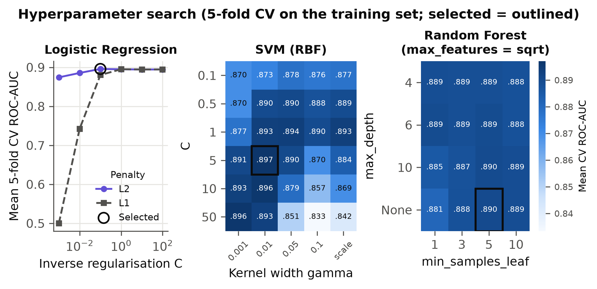
max_features = √d). Outlined cells mark the selected configurations.Figure 8 shows that all three landscapes are flat near the optimum. For LR, every \(C\ge 0.01\) with L2 gives an AUC within about 0.01 of the best; only very strong L1 regularisation (\(C = 0.001\)) collapses the model to a constant (AUC 0.5) by zeroing all weights. The SVM is good over a broad band and degrades only when large \(C\) meets large \(\gamma\) (AUC 0.833 at \(C=50,\gamma=0.1\)), the over-fitting corner. The random forest varies by less than 0.01 AUC across all depth and leaf settings with \(m=\sqrt d\). The flatness explains why the SVM's selected setting changes between nested-CV folds: several settings are statistically tied, so the choice depends on which patients land in which fold. It also means the results are not sensitive to the exact grid.
| Model | Accuracy | Precision | Recall | Specificity | F1 | ROC-AUC |
|---|---|---|---|---|---|---|
| Logistic Regression | 0.816 ± 0.026 | 0.826 | 0.846 | 0.779 | 0.836 ± 0.025 | 0.896 ± 0.024 |
| SVM (RBF) | 0.822 ± 0.026 | 0.830 | 0.854 | 0.782 | 0.841 ± 0.025 | 0.897 ± 0.023 |
| Random Forest | 0.819 ± 0.027 | 0.820 | 0.864 | 0.763 | 0.840 ± 0.023 | 0.891 ± 0.026 |
| Majority baseline | 0.553 ± 0.003 | 0.553 | 1.000 | 0.000 | 0.712 | 0.500 |
| LR — nested | 0.813 ± 0.031 | tuning repeated inside each outer fold | 0.831 | 0.896 ± 0.027 | ||
| SVM — nested | 0.819 ± 0.021 | 0.839 | 0.895 ± 0.025 | |||
| RF — nested | 0.822 ± 0.026 | 0.842 | 0.888 ± 0.022 | |||
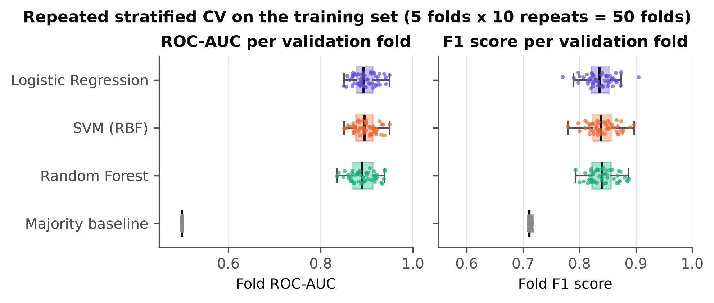
All three models reach a CV ROC-AUC of about 0.89–0.90 and an accuracy of about 0.82, compared with 0.553 for the baseline (Table 5, Figure 9). The fold-to-fold standard deviation (≈0.025 AUC) is more than four times larger than the largest difference between model means (0.006). The nested estimates are within 0.003 AUC of the non-nested ones, so the optimism from tuning on the same data is negligible, which is expected given the flat landscapes in Figure 8.
| Model | Accuracy | Precision | Recall | Specificity | F1 | ROC-AUC | Avg. prec. |
|---|---|---|---|---|---|---|---|
| Logistic Regression | 0.837 [0.783, 0.891] | 0.840 | 0.873 [0.806, 0.936] | 0.793 | 0.856 [0.804, 0.905] | 0.914 [0.866, 0.953] | 0.922 |
| SVM (RBF) | 0.848 [0.799, 0.897] | 0.830 | 0.912 [0.853, 0.964] | 0.768 | 0.869 [0.819, 0.914] | 0.913 [0.868, 0.953] | 0.923 |
| Random Forest | 0.842 [0.788, 0.891] | 0.835 | 0.892 [0.829, 0.950] | 0.780 | 0.863 [0.811, 0.908] | 0.900 [0.850, 0.943] | 0.907 |
| Majority baseline | 0.554 [0.484, 0.625] | 0.554 | 1.000 | 0.000 | 0.713 | 0.500 | 0.554 |
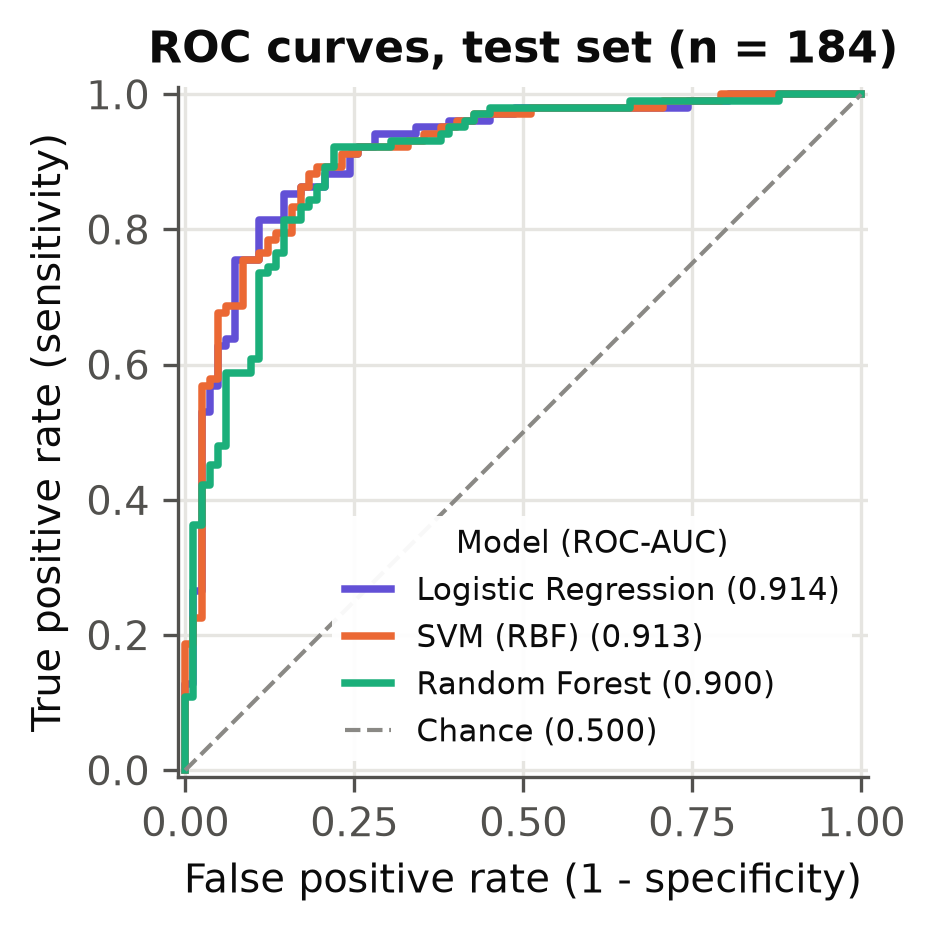
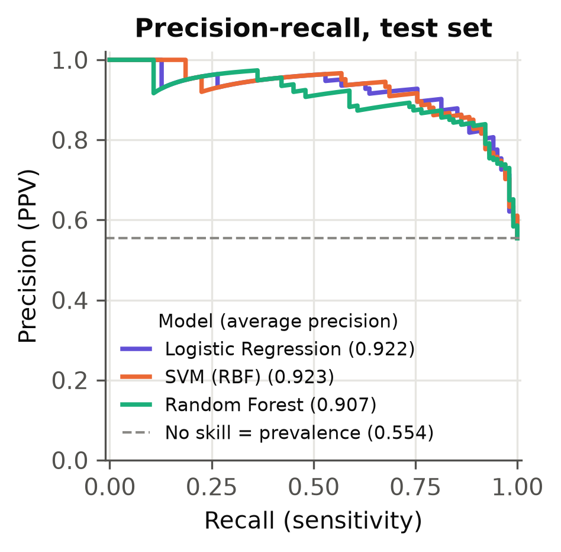
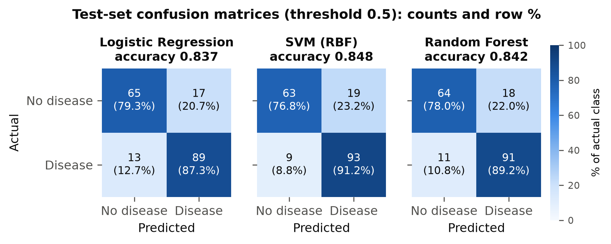
On the held-out test set (Table 6, Figures 10–11, Appendix Figure A1) the models reach a ROC-AUC of 0.900–0.914 and an accuracy of 0.837–0.848. They correctly classify about 155 of 184 patients, against 102 for the baseline. LR has the highest AUC and specificity, while the SVM has the highest accuracy, recall (91.2%) and F1. The test scores are slightly higher than the CV means but well inside the bootstrap intervals, which are wide (about ±0.04–0.05 for AUC, F1 and accuracy, and up to ±0.09 for specificity) because the test set is small.
Are the differences real? No. Table 7 shows that none of the twelve pairwise tests comes close to significance. On the test set the models disagree on only 6–9 patients per pair, and the largest AUC gap (LR vs RF, 0.014) has a DeLong p of 0.27.
| Pair | CV AUC diff. (corrected t) | CV accuracy diff. (corrected t) | Test accuracy (exact McNemar) | Test AUC diff. (DeLong) |
|---|---|---|---|---|
| LR vs SVM | −0.0004, p = 0.88 | −0.0053, p = 0.53 [1.0] | 2 vs 4 discordant, p = 0.69 [1.0] | +0.0010, p = 0.87 |
| LR vs RF | +0.0054, p = 0.19 [0.56] | −0.0023, p = 0.84 [1.0] | 4 vs 5 discordant, p = 1.0 | +0.0140, p = 0.27 [0.82] |
| SVM vs RF | +0.0058, p = 0.19 [0.56] | +0.0030, p = 0.80 [1.0] | 5 vs 4 discordant, p = 1.0 | +0.0130, p = 0.36 [0.82] |
Per hospital. Cleveland has the highest AUC (0.95–0.96, accuracy 0.87–0.90) and Hungary, the largest cohort with incomplete data, the lowest AUC among sites where it is measurable (0.83–0.84, accuracy 0.79–0.81). Hungary also has the lowest accuracy for LR and the SVM; for RF the lowest is Long Beach (0.80). The 25 Swiss test patients include only 2 without disease, so their per-site AUC is not meaningful.
Mostly yes. All three models are far better than the baseline. Their accuracy is in line with what is documented for this data: about 77–81% for the original logistic-regression function across sites [2], and 75–79% for early ML methods on Cleveland alone [1, 19]. I expected at least a small advantage for the non-linear SVM and RF. Instead, the simple linear model is statistically tied with both and has the best test AUC. Three observations explain this. First, the EDA showed that each informative feature relates to disease in a roughly monotone way (Figures 3–4), which a linear model on one-hot and standardised inputs captures well. Second, with 736 patients the extra flexibility of the RBF kernel and the deep trees has more room to fit noise than signal. The learning curves in Section 4.6.1 confirm this. Third, the remaining errors come from patients whose features genuinely look like the other class (Section 4.6.8), and no classifier can fix that. Two weaknesses stand out despite the good average numbers. Specificity is only 0.77–0.79, so about one in five healthy patients would be flagged. And as Section 4.6.3 shows, these random-split numbers are optimistic for a hospital the model has never seen. A further limitation is the population: every patient was referred for angiography in the 1980s, so prevalence is far higher than in general screening and the results apply to triage of already-suspected patients, not to the general public.
Each experiment below answers one question raised by the results. Unless noted otherwise, experiments use the training set with stratified CV and the hyperparameters of Table 4 (5 folds × 3 repeats = 15 paired folds, identical across settings so that differences are paired).
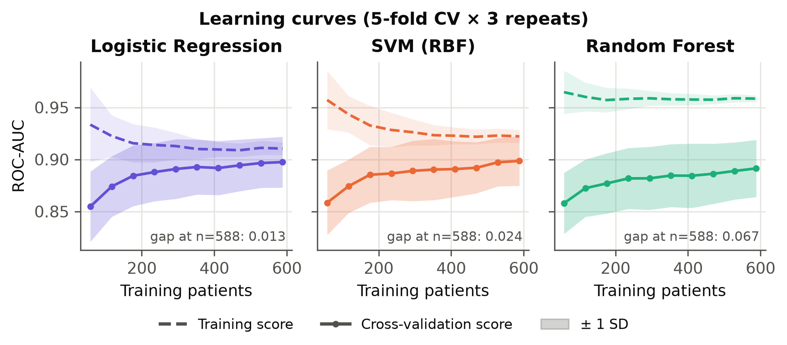
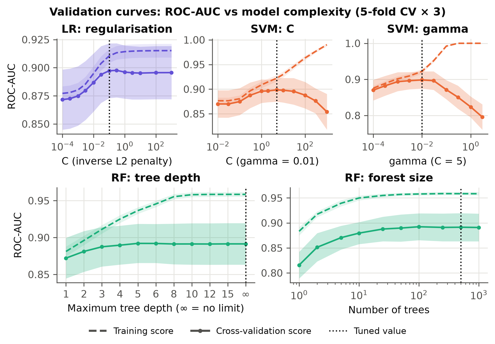
The learning curves (Figure 12) flatten early. Doubling the training size from 294 to 588 patients raises the CV AUC by only 0.007–0.010, and all three models plateau at about 0.89–0.90. LR and the SVM show small train–validation gaps (0.013 and 0.024), so they are bias-limited. The random forest fits the training data much better (training AUC 0.958) but generalises no better, with a gap of 0.067: it has more variance, not more useful signal. The validation curves (Figure 13) show the classic inverted-U shape of the CV AUC for the SVM's \(\gamma\). At \(\gamma=3\) the training AUC reaches 1.0 while the CV AUC drops to 0.80, which is textbook over-fitting. For RF, AUC stops improving beyond depth ≈5 and about 100 trees. Every tuned value lies within 0.001 AUC of the best point on its curve. Conclusion: more model capacity or finer tuning will not help; better or more complete features would.
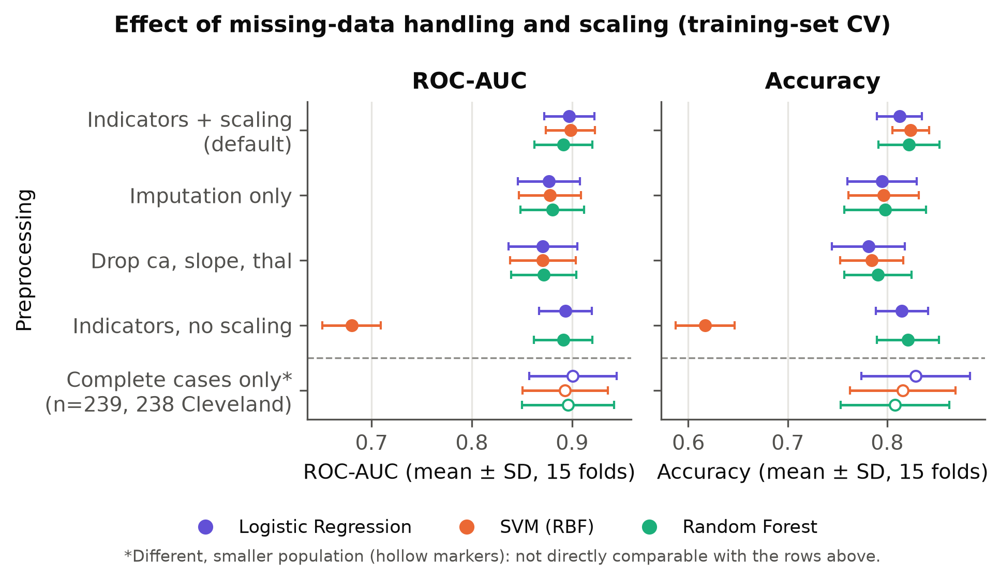
Figure 14 compares the default pipeline with three alternatives. Removing the missing-value indicators and the “missing” category (plain imputation) costs 0.011–0.020 AUC and about 2–3 points of accuracy. Dropping the three sparse features (ca, slope, thal) costs 0.019–0.028 AUC. So these features are useful even though they are mostly missing, because they are very informative when present. Turning off standardisation leaves LR and RF almost unchanged (ΔAUC −0.004 and −0.0001; trees are scale-invariant). It breaks the SVM, however: AUC falls from 0.898 to 0.680, because unscaled cholesterol (hundreds of mg/dl) dominates the Euclidean distances in the RBF kernel and \(\gamma=0.01\) was tuned for standardised inputs. Complete-case analysis keeps only 239 of 736 training patients, 238 of them from Cleveland, and is therefore not a usable strategy for a multi-hospital model.
A random split puts patients from every hospital into both training and test sets. A more realistic deployment test trains on three hospitals and tests on the fourth. Table 8 and Figure 15 report this leave-one-site-out (LOSO) evaluation.
| Held-out hospital | Logistic Regression | SVM (RBF) | Random Forest | Majority acc. |
|---|---|---|---|---|
| Cleveland (303) | 0.900 [0.864, 0.933] / 0.838 | 0.875 [0.832, 0.911] / 0.746 | 0.877 [0.836, 0.915] / 0.726 | 0.459 |
| Hungary (294) | 0.897 [0.858, 0.932] / 0.776 | 0.877 [0.835, 0.917] / 0.643 | 0.896 [0.858, 0.930] / 0.755 | 0.361 |
| Switzerland (123) | 0.729 [0.501, 0.934] / 0.780 | 0.710 [0.470, 0.932] / 0.797 | 0.744 [0.500, 0.971] / 0.772 | 0.065 |
| Long Beach VA (200) | 0.715 [0.631, 0.797] / 0.735 | 0.663 [0.578, 0.747] / 0.725 | 0.722 [0.635, 0.806] / 0.685 | 0.255 |
| Mean over sites | 0.810 / 0.782 | 0.781 / 0.728 | 0.809 / 0.735 | |
| Random split (Table 6) | 0.914 / 0.837 | 0.913 / 0.848 | 0.900 / 0.842 | 0.554 |
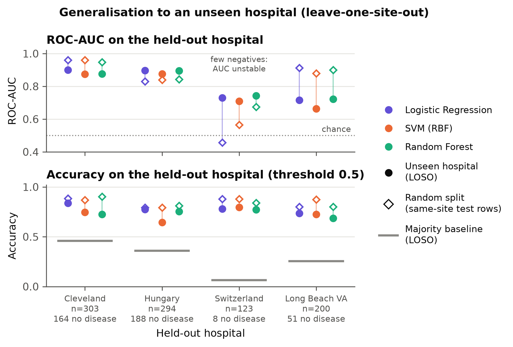
The mean LOSO AUC (0.78–0.81) is 0.09–0.13 below the pooled random-split AUC, but that gap mixes two effects because pooled AUC also rewards ranking patients between hospitals. A like-for-like comparison of per-hospital AUCs, excluding Switzerland (only 2 healthy test patients), gives a drop of 0.06–0.09 (LR 0.902 to 0.837, SVM 0.893 to 0.805, RF 0.897 to 0.831). The change is uneven: Cleveland and especially Long Beach fall, while Hungary rises (LR 0.830 to 0.897). Cleveland and Hungary, the two largest and most complete cohorts, transfer well (AUC 0.87–0.90). Long Beach VA transfers worst (AUC 0.66–0.72): it is mostly male, older and has many patients without exercise tests, a combination the other sites rarely show. Accuracy also falls (by 0.05 for LR, 0.12 for the SVM and 0.11 for RF against the pooled random split), partly because of poor calibration-in-the-large [24]: the mean predicted probability no longer matches the new hospital's prevalence. A model's predicted probabilities are anchored to the prevalence of the hospitals it was trained on. For example, when Switzerland (93.5% disease) is held out, the models predict an average probability of only 0.63–0.68 (Appendix Figure A3). On the same-hospital comparison without Switzerland, the 0.5 threshold suffers more than ranking for the SVM (accuracy −0.14 vs AUC −0.09) and RF (−0.12 vs −0.07), but not for LR (−0.04 vs −0.06).
LR and RF tie on LOSO AUC (0.810 vs 0.809), and LR is best on LOSO accuracy (0.782), mainly because its probabilities are better calibrated on Cleveland. The LOSO accuracies on Hungary (0.78), Long Beach (0.74) and Switzerland (0.78) are of the same order as Detrano et al.'s 77–81% for a function transferred from Cleveland [2]. Its lesson still holds 37 years later: the Cleveland-derived probabilities were over-estimated in Hungary and Long Beach and under-estimated in Switzerland [2], so a diagnostic model must be checked at the site where it will be used. (LOSO is still mildly optimistic, because the hyperparameters were tuned on pooled training data that included patients from the held-out hospital.)
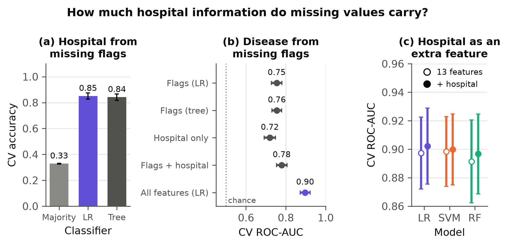
Section 2.4 suggested that missingness mostly encodes the hospital. Figure 16 confirms this directly. A logistic regression that sees only which values are missing identifies the hospital correctly for 85% of patients (99% of Cleveland patients). The same flags alone predict disease with an AUC of 0.75, more than the hospital identity alone (0.72), because they also contain the genuinely informative slope gap. This is a form of shortcut learning [13, 14]: part of what the models learn is “this patient comes from a high-prevalence hospital”, which is valid within these four hospitals but would not transfer to a new one with different record-keeping. It may also contribute to the LOSO drop. Adding the hospital as an explicit feature improves CV AUC by only +0.001 to +0.005. The gain is small but consistent (better in 11–14 of the 15 paired folds), which fits the idea that the models already infer most of the hospital signal from the missingness pattern. I therefore kept the hospital out of the final models.
The LR coefficients (Figure 17) agree with the clinical picture of Section 2.3. More coloured vessels (OR 1.68 per SD), asymptomatic chest pain (OR 1.47 per SD; 2.16 present vs absent), ST depression (1.42 per SD), exercise angina (1.35 per SD; 1.86 present vs absent) and male sex (1.32 per SD; 1.97 male vs female) raise the odds of disease, while atypical angina and a higher peak heart rate lower them. Two missing indicators rank near the top, for cholesterol (OR 1.57) and ca (1.46). Section 4.6.4 shows that these are hospital proxies, not medical effects: within a hospital, a missing cholesterol value says nothing about disease (CMH p = 0.57). Permutation importance (Figure 18) is model-agnostic and ranks chest-pain type first for all three models (ΔAUC 0.037–0.067). LR and the SVM produce almost identical rankings (Spearman ρ = 0.98). RF agrees less (ρ = 0.64–0.71) and ranks sex and thal higher and ca much lower. RF's impurity importance (Appendix Figure A2) also puts chest pain first. However, impurity importance is known to favour continuous features with many split points [15], so I treat permutation importance as the more reliable measure. The permutation importances were computed on only 184 test patients, and all importance measures share credit between correlated features, so the exact ranks beyond the top few are uncertain.
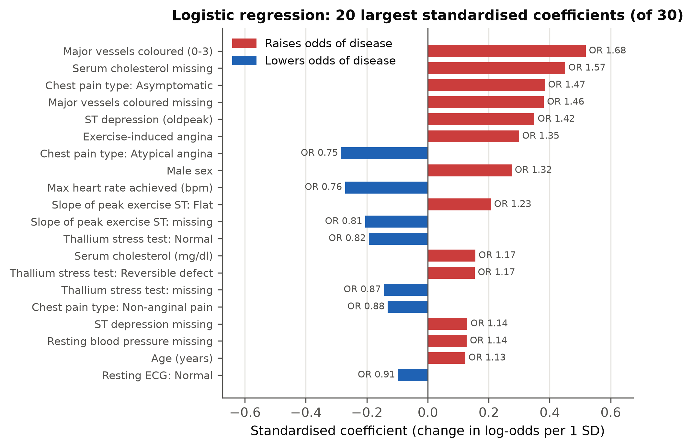
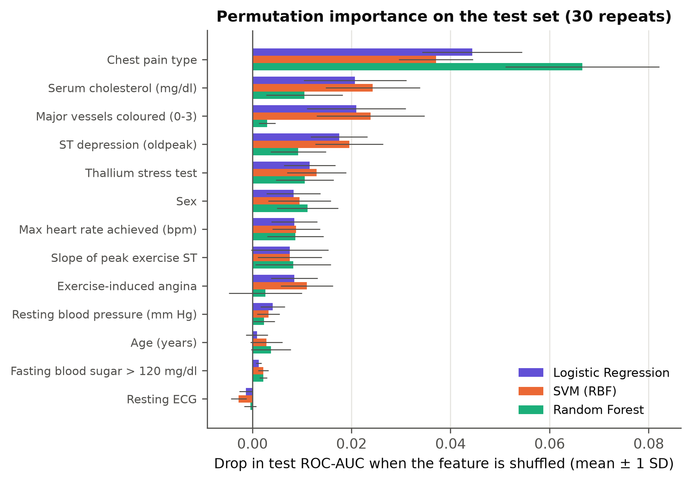
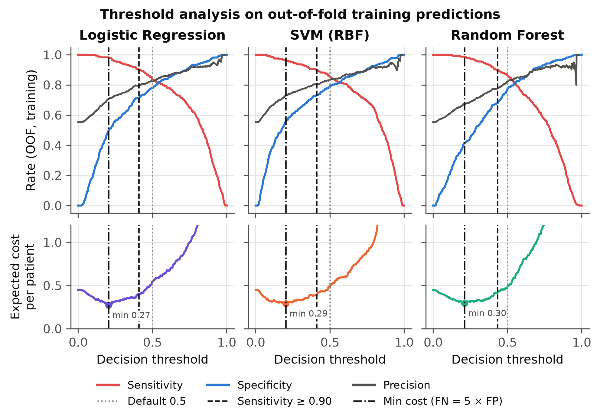
For screening, a missed diagnosis is worse than an extra test. Using the curves in Figure 19, I chose thresholds using only out-of-fold predictions on the training set and then applied them unchanged to the test set (Table 9). Requiring at least 90% sensitivity gives thresholds of 0.41–0.43, and this target transferred to the test set (91.2–92.2% sensitivity). With a cost ratio of 5:1, decision theory predicts an optimal threshold of \(t^*=\frac{c_{FP}}{c_{FP}+c_{FN}}=\frac16\approx0.17\) for perfectly calibrated probabilities [23]. The empirical cost minima (0.20–0.21) are close, which is a sign of reasonable calibration. At these thresholds the models catch 97–98% of diseased test patients and cut the expected cost by 20–38% relative to 0.5, but specificity falls to 0.44–0.56. The choice of threshold is therefore a clinical decision, not a statistical one. The 90%-sensitivity rule is a balanced compromise.
| Model | Rule | Threshold | Sens. / Spec. | FN / FP | Cost |
|---|---|---|---|---|---|
| Logistic Regression | default | 0.500 | 0.873 / 0.793 | 13 / 17 | 0.446 |
| sensitivity ≥ 0.90 | 0.409 | 0.912 / 0.744 | 9 / 21 | 0.359 | |
| minimum cost | 0.204 | 0.980 / 0.500 | 2 / 41 | 0.277 | |
| SVM (RBF) | default | 0.500 | 0.912 / 0.768 | 9 / 19 | 0.348 |
| sensitivity ≥ 0.90 | 0.411 | 0.922 / 0.744 | 8 / 21 | 0.332 | |
| minimum cost | 0.202 | 0.971 / 0.561 | 3 / 36 | 0.277 | |
| Random Forest | default | 0.500 | 0.892 / 0.780 | 11 / 18 | 0.397 |
| sensitivity ≥ 0.90 | 0.434 | 0.922 / 0.695 | 8 / 25 | 0.353 | |
| minimum cost | 0.211 | 0.980 / 0.439 | 2 / 46 | 0.304 |
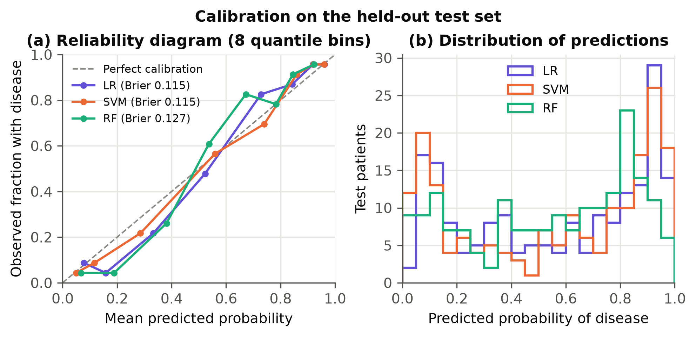
A risk score is only useful if “70%” means roughly 70%. LR and the SVM are well calibrated, with a Brier score of 0.115 each against 0.247 for always predicting the prevalence. The Platt-scaled SVM has the smallest expected calibration error (0.031). RF has a worse Brier score (0.127), and its reliability curve is S-shaped (Figure 20): it is under-confident at both ends, with a calibration slope of 1.43, because averaging many trees pulls probabilities away from 0 and 1. This is a known property of bagged trees [18]. It means RF's probabilities would need recalibration before being shown to a clinician, even though its ranking (AUC) is almost as good.
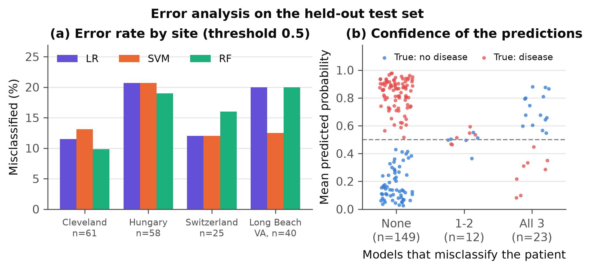
The three models make largely the same mistakes (Figure 21). Of the 184 test patients, 149 are classified correctly by all models, 12 by some, and 23 (12.5%) are misclassified by all three. These 23 shared errors are mostly confident false positives (15 FP, 8 FN; mean |p−0.5| = 0.22). They are disproportionately Hungarian (47.8% vs 31.5% of the test set) and often have non-anginal chest pain, a pattern the features cannot separate from true disease. The 12 patients on which the models disagree are borderline cases (p ≈ 0.5), half of them from Long Beach, with more missing values (3.2 on average). Hungary (19–21%) and, for LR and RF, Long Beach (20%) have the highest error rates, against 10–13% for Cleveland; the SVM's Long Beach error rate is only 12.5%. Because the errors are shared, combining the three models in an ensemble would gain little. Reducing these errors would require information the data set does not contain.
To relate my results to the many studies that use only Cleveland, I ran the same pipelines with 5×10 CV on the 303 Cleveland patients (no new tuning; this is a benchmark only, so it includes the Cleveland test-split patients). Accuracy is 0.853 (LR), 0.838 (SVM) and 0.838 (RF), with AUC 0.904–0.913, against 0.541 for the majority class. This is higher than on the pooled data and above the early results documented for this subset (74.8–78.9% [1, 19]). The pooled four-hospital task is genuinely harder than the familiar benchmark, mostly because of the missing data and the differences between hospitals.
slope while reducing reliance on hospital-revealing gaps.I built a complete machine-learning pipeline to predict angiographic heart disease from 13 clinical attributes using all four cohorts of the UCI Heart Disease data. With a leakage-free preprocessing pipeline that keeps every patient, a tuned logistic regression, RBF SVM and random forest all reach a test ROC-AUC of 0.90–0.91 and an accuracy of 0.84–0.85, against 0.55 for the majority class. The three models are statistically indistinguishable, so the simplest one, logistic regression, is my recommended model. It is the most interpretable, well calibrated, the most stable under tuning, and the most accurate on average at an unseen hospital. The supporting experiments show three things. Performance is limited by the information in the features, not by model capacity. Missing values are largely a fingerprint of the hospital that models exploit as a shortcut. And a random train/test split overstates performance at a new hospital: per-hospital AUC falls by 0.06–0.09 (excluding Switzerland), and accuracy at the 0.5 threshold also suffers because predicted probabilities follow the training hospitals' prevalence.
ca, fasting blood sugar and slope. I realised the test was confounded by hospital, and switched to a Cochran–Mantel–Haenszel test stratified by site, which showed that only the slope gap has a strong within-hospital association (p = 3.1×10−18; the others have p ≥ 0.026). Similarly, I widened a correlation heat-map whose clipped colour scale made moderate correlations look extreme.penalty argument of logistic regression and the probability option of SVC. I rewrote the L1/L2 search with l1_ratio and obtained SVM probabilities through explicit Platt scaling with CalibratedClassifierCV, which also made the calibration step visible in the method.The most valuable next steps are to recalibrate the model on a small local sample before using it at a new hospital, to compare multiple imputation with the indicator approach, and to tune hyperparameters with hospital-grouped cross-validation so that model selection rewards transfer across sites.
All code, data and outputs are organised as follows; python run_all.py regenerates every figure and number in this report (about 4 minutes).
| Path | Contents |
|---|---|
data/raw/ | The four processed UCI files and the dataset documentation |
src/data.py, src/preprocess.py | Loading, cleaning, stratified split; preprocessing pipelines |
src/models.py, src/evaluation.py | Model definitions, grids and tuning; metrics and bootstrap CIs |
src/eda.py | Section 2: exploratory analysis, statistics, figures 1–7 |
src/train_evaluate.py | Sections 4.2–4.4: tuning, repeated and nested CV, test evaluation, statistical tests |
src/experiments_data.py | Sections 4.6.2–4.6.4 and 4.6.9: ablation, leave-one-site-out, missingness, Cleveland benchmark |
src/experiments_model.py | Sections 4.6.1 and 4.6.5–4.6.8: curves, importance, thresholds, calibration, errors |
figures/, results/ | All figures (PNG, 300 dpi) and every reported number (CSV/JSON) |
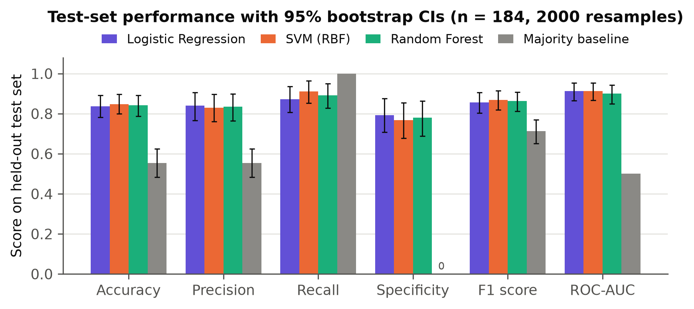
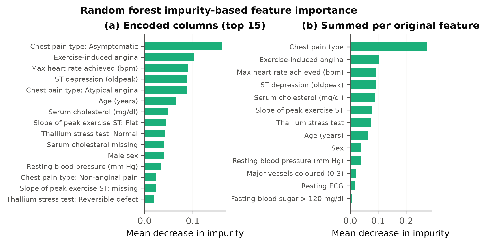
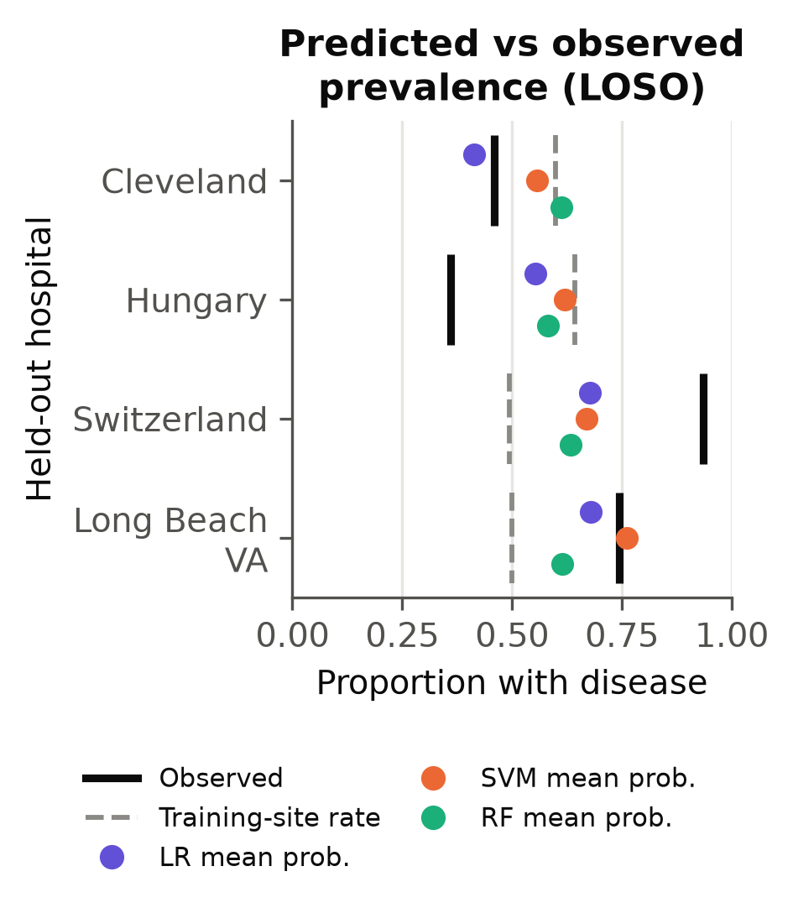